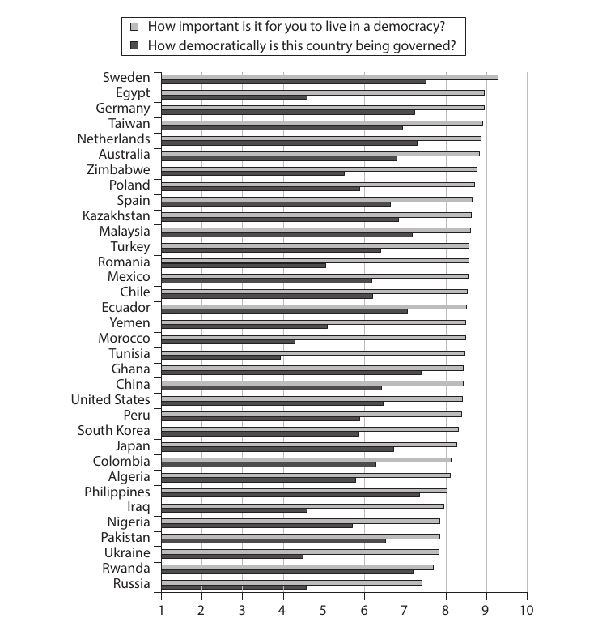
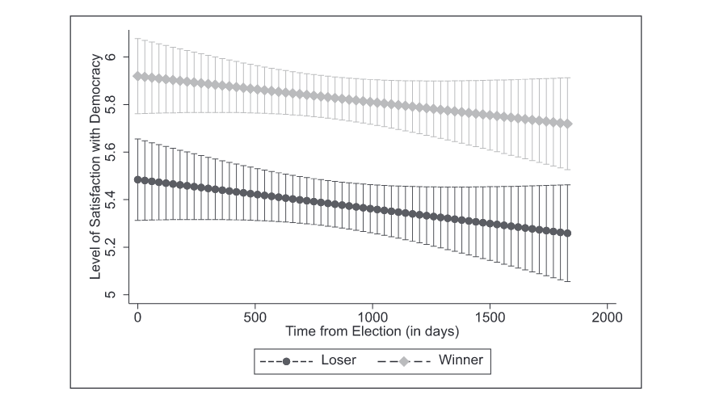

2 Demokratije
2.1 Osnovni problem
Pojam, ideje i vrednosti demokratije imaju različita značenja za građane različitih društava u različitim vremenskim periodima. Očigledno je da u određenim periodima, poput razdoblja od 1989. do 2000. godine u Istočnoj Evropi, građanima borba za demokratiju i demokratizaciju predstavlja važan i vredan cilj, dok nekada demokratija postaje istrošen politički pojam, udaljen od problema, interesa i potreba većeg dela građana modernih društava.
Uprkos tome što je predstavnička demokratija kao politički sistem sve više kritikovana, što pokazuje i rastuće nepoverenje u političare i političke partije, međunarodni anketni podaci pokazuju da je na globalnom nivou većina građana misli da je demokratija dobar sistem kolektivnom upravljanja (Blais et al., 2021). Zbog toga, jedno od najvažnijih problema empirijskog istraživanja demokratije jeste upravo njena važnost ili irelevantnost za građane različitih društava u različitim istorijskim periodima.
Iako postoje nebrojene definicije i tipologije demokratije, tipične za institucionalni ili makro nivo političke analize, naš fokus biće na razgraničenju ovog pojma u kontekstu njegove važnosti za građane i njihovu političku participaciju. Drugim rečima, fokusiraćemo se na načine na koji građani percipiraju demokratiju i demokratičnost političkih sistema u kojima žive.
2.2 Demokratija
Demokratija u najširem značenju pojma povezuje koncepti vlasti sa pojmom naroda, pri čemu ta veza može imati različite oblike i značenja. Npr. u socijalističkom/komunističkom kontekstu, ta veza podrazumeva vlast potlačenih, ugnjetavanih klasa, dok u liberalnom kontekstu ta veza podrazumeva ravnopravan i jednak uticaj svakog građanina na političke procese jednog društva.
Možemo govoriti o dva široka ideala ili modela demokratije (Achen & Bartels, 2016). Populistički model zasniva se na romantičarskoj ideji koja demokratiju shvata kao politički sistem u kojem narod odlučuje, a vlast predstavlja izraz narodne volje. Ovaj model počiva i na ideji o narodnoj suverenosti koja tvrdi da demokratska vlast izvire ili proističe iz opšte volje jednog naroda, te su potezi i politike te vlasti zapravo “preslikane” preferencije, vrednosti i ideje jednog naroda (ili većine tog istog naroda).
Suverenost predstavlja vrhovni politički autoritet. Na osnovnom nivou, suverenost predstavlja kontrolu nad narodom i geografskim prostorom.
Većina modernih demokratija je zasnovana na principu individualnog suvereniteta (građanina) koji poverava svoj politički autoritet predstavničkim telima.
Problem populističkog modela jeste to što pretpostavlja su demokratske političke procedure u potpunosti sposobne da izvrše pomenuto “preslikavanje”. Srž te pretpostavke je i ideja da su građani podjednako sposobni, zainteresovani i uključeni u politički proces što je empirijski neodrživa tvrdnja. Samim tim, tokom 20. veka, mnogi teoretičari i istraživači politike su osporavali ovu ideju.
Nedostižni ideal omnikompetentnog, suverenog građanina je podjednako loša ideja kao što bi bio pokušaj debelog muškarca da postane baletan (Lippmann, 1946).
Prosečnom građaninu opada nivo mentalnih sposobnosti čim uđe na teritoriju politike. Zaključuje i analizira stvari na način za koji bi u drugoj sferi života (sferi stvarnih interesa) sam rekao da je infantilan (Schumpeter, 1976).
Sa druge strane, imamo realistični model demokratije, koji je više prisutan u naučnim istraživanjima politike i političkih procesa. On se zasniva na ideji da je srž demokratije zapravo regrutacija i selekcija lidera. Demokratija nije ništa drugo do jedna od mnogih procedura izbora nosilaca političke moći i političkih funkcija ili samo jedan od mogućih mehanizama za transfer političke moći. Unutar ovog modela formulišu se različite minimalne ili proceduralne definicije demokratije. Sa ovim modelom je usko povezana i retrospektivna teorija glasanja o kojoj će biti reči u narednim odeljcima.
Potrebno je napomenuti da i realistični model naglašava vrednosni aspekt demokratije, s tim što se ta vrednost ne vezuje za neki određeni ishod (ekonomsko blagostanje, društvena pravda, društvena jednakost) nego se pretpostavlja da je ta vrednost intrinzična. Adam Przevorski, jedan od najuticajnijih savremenih teoretičara demokratije, smatra da je najveća vrednost demokratije to što omogućava kolektivu da s vremena na vreme odluči ko će tim kolektivom upravljati i, do određene mere, na koji način.
Ne treba izgubiti iz vida da je demokratija i dalje oblik političke vladavine nad određenom teritorijom i nad određenim narodom. Iako je demokratija, prema Prezvorskom, druga najbliža implementacija devetnaestovekovnog ideala samoupravljanja, ona i dalje podrazumeva da će nama neko upravljati ili nad nama neko vladati, što nikako nije prijatno osećanje jer to znači da ćemo pre ili kasnije biti primorani da uradimo neke stvari koje želimo da uradimo i sprečeni da uradimo neke stvari koje želimo. Ono što je glavna vrednost demokratije u tom aspektu jeste što možemo prospektivno da odlučujemo ko će neku upravljačku funkciju dobiti i retrospektivno da odlučujemo da uzmemo funkciju nekome ko nam se ne sviđa.
Na kraju, ne treba zaboraviti da je u empirijski najlakše proverljiva prednost demokratije mirna tranzicija vlasti odnosno procesuiranje društvenih sukoba u relativnoj slobodi i miru.
Iako postoje mnogobrojne teorijske, filozofske i političke definicije demokratije, u istraživačkom smislu najkorisnije je poći od minimalne definicije demokratije.
Demokratija je institucionalni aranžman putem kojeg se dolazi do političkih odluka i u kojem putem takmičenja za glasove pojedinci stiču moć da donose političke odluke (Schumpeter, 1976).
Šumpeterova minimalna definicija demokratije je najpoznatija i najkorišćenija u savremenim istraživanjima politike. U nešto kraćoj formi ona glasi:
Demokratija je slobodno takmičenje za slobodne glasove (Schumpeter, 1976).
Minimalne definicije demokratije se najčešće dopunjuju dodatnim uslovom političke jednakosti. Da bi takmičenje za slobodne glasove bilo zaista slobodno potrebno je ravnopravno uključivanje građana u političko takmičenje odnosno potrebna je sloboda da se u to takmičenje upuste onako kako žele, prema sopstvenim vrednostima, interesima i motivima. U formalnom kontekstu to podrazumeva i institucionalnu, zakonsku regulaciju političkog takmičenja i formiranje nacionalne političke arene.
Ovaj pojam možemo u idealnom značenju definisati na sledeći način:
Politička jednakost predstavlja uslov pod kojim svi građani imaju jednaki uticaj na kolektivno donošenje odluka u jednoj političkog zajednici.
Politička jednakost je nedostižna u uslovima nejednake distribucije društvene i ekonomske moći, kao i kulturne hegemonije. Samim tim, preciznije je tvrđenje da je osobina demokratskih sistema smanjenje političke nejednakosti. Demokratsko društvo svojim građanima pruža jednaka politička prava (pravo glasa, jednaka zaštita političkih sloboda i jednakost pred zakonom), za koje se smatra da u dugom roku smanjuju političke i druge društvene nejednakosti.
To ipak ne znači da će se svi građani uključiti u tu vrstu političkog takmičenja, niti da će svi građani na isti način, pod istim uslovima i sa istim resursima (vreme, interesovanje, znanje) biti jednak deo ovog političkog procesa. Šta više, ne samo da to neće učiniti na podjednak način, nego jednom delu građana ovaj proces neće biti bitan, niti će biti zainteresovani za samu demokratiju i demokratske procedure odlučivanja.
To nas dovodi do prvog problema istraživanja demokratije. Reč je o višeznačnom pojmu koji nije jasno definisan i koji do te mere u javnom diskursu može imati različita značenja da neki autori tvrde da je to “možda najbesmislenija reč u svetu javnih poslova” (Crick, 2011). Međutim, ono što je nedvosmisleno jasno jeste da u nekim periodima i u nekim društvima demokratija i pitanje demokratičnosti jedno društva može imati stvarnu i suštinsku važnost za građane tog društva.

Građani su u stanju da iskažu koliko je demokratičnost društva u kojem žive važna u njihovim životima, kao i da ocene demokratičnost trenutnog političkog sistema. Slika 2.1 prikazuje varijacije jedne i druge ocene u u različitim društvima.
Ono što možemo primetiti da prosečan značaj koji građani pridaju demokratiji nije nužno vezan za starost i razvijenost tog demokratskog političkog sistema. Opasnost od pasivizacije građana u razvijenim demokratije, njihove “zasićenosti” demokratskim političkim životom i ignorisanjem političkih institucija, opisana je kroz pojam demokratija publike (auditorijska demokratija). Demokratija publike predstavlja politički sistem u kojem relativno pasivni građani učestvuju u javnom spektaklu u kojem je krajnji domet njihove političke participacije izbor između ponuđenih kandidata, bez trajnih ideoloških, vrednosnih i moralnih stavova.
2.3 Demokratizacija
Tokom 20. veka na globalnom nivou intenziviran je proces razvoja demokratije u državama širom planete. Sve do sredine 20. veka, demokratski politički sistemi bili su izuzetak, a ne pravilo u svetskoj politici. Ako je prvi razlog naučnog istraživanja demokratije činjenica da ona ima različita značenja, važnosti i ocene za različite građane, drugi razlog jeste činjenica da se brojna društva u 20. i 21. veku kreću u pravcu razvoja od autokratskog ka demokratskom političkom sistemu, tj. činjenica da se broj demokratija uvećava tokom vremena, što prikazuje Tabela 2.1.
| Godina | Broj demokratija | Udeo demokratija |
|---|---|---|
| Godina | Broj demokratija | Udeo demokratija |
| 1974 | 39 | 27,5% |
| 1990 | 76 | 46.1% |
| 1995 | 117 | 61,3% |
| 2000 | 120 | 62,5% |
| 2005 | 123 | 64,1% |
Demokratizacija je proces transformacije nedemokratskog režima u demokratski. To je tranzicija od nedemokratskog političkog sistema ka demokratskom i najčešće uključuje i promenu režima.
Ova definicija odnosi se na uži pojam demokratizacije. Širi pojam demokratizacije podrazumeva pored procesa transformacije u demokratski režim (I faza), još jedan proces — transformaciju ka punoj ili konsolidovanoj demokratiji (2. faza). Druga faza demokratizacije predstavlja političku transformacije od parcijalne izborne demokratije ka punoj ili konsolidovanoj demokratiji. To je tranzicija između različitih stepena demokratije unutar istog demokratskog sistema.
U periodima kada su demokratije bile retke, konsenzus u naučnim istraživanjima bio je da postoje različiti oblici autokratskih režima (totalitarizam, vojne diktature itd.), ali i jedan oblik demokratije - liberalna demokratija. Fokus istraživanja bio je više na raznolikosti (varijabilitetu) autoritarnih nedemokratskih režima.
Međutim, u drugoj polovini 20. veka, situacija se menja i primećujemo sve veći rast mladih demokratija na različitim kontinentima i postaje jasno da postoji razlika između starih, liberalnih demokratija i novih demokratskih režima.
U najužem značenju, pojam autokratije označava oblik vladavine u kojem jedna osoba ima neograničen autoritet vršenja vlasti.
U savremenoj literaturi, češće srećemo pojam autoritarizma jer je u savremenim političkim sistemima izuzetno retka koncentracija moći u rukama samo jednog čoveka. Takođe, autokratija je pojam koji nije nužno ograničen na političke sisteme, te tako autokratija može biti oblik upravljanja religijskim, poslovnim i drugim organizacijama.
Autoritarni režim je tip nedemokratskog režima sa tri distinktivne karakteristike:
Ograničeni pluralizam
Mentalitet umesto ideologije
Odsustvo visokog nivoa političke mobilizacije
Među različitim tipovima autoritarnih režima najčešće u savremenom svetu pronalazimo “izborni autoritarizam”, odnosno tip režima koji kombinuje višepartijske izbore sa različitim tipovima autoritarne kontrole koji tim izborima oduzimaju bilo kakav demokratski značaj. Nekada se ovaj savremeni talas autoritarizma naziva i “populistička pretnja demokratiji” i do nje dolazi onda kada vlast:
svesno preduzima korake koji brišu institucionalna ograničenja vlasti
“ukopa” svoje kadrove u sve grane vlasti tako da postaje gotovo nemoguće ukloniti je mirnim putem.
Najčešće se liberalne demokratija definišu preko sledećih obeležja:
posrednička i predstavnička demokratija,
politički pluralizam (takmičenje i mogućnost izbora),
razlikovanje države i civilnog društva,
pluralizam u širem smislu.
Predstavničke posredničke (ili parlamentarne) demokratije počivaju na konceptu reprezentacije ili predstavljenosti. Ovaj pojam može imati dve različite dimenzije:
Ko predstavlja koga/šta? Predsednik države predstavlja zemlju u inostranstvu
Na koji način predstavlja?
Autorizovano (ovlašćeno) predstavljanje. Advokat
Tipsko predstavljanje. Narodni poslanik
U demokratskoj politici reprezentacija nije delanje umesto nekoga već politički odnos simpatetičke sličnosti ili komunikacije sa onima u čije ime predstavnici donose zakone.
Politikolog Semjuel Hantington je popularizovao pojam talasa demokratizacije (Huntington, 2012). On je pokazao kako se planetarno širenje demokratije ne odvija spontanim procesom, gde nasumičnim redom neke autokratije počinju transformacije ka demokratiji, već se to odigrava u talasima, tj. države prate jedne drugu u ovom procesu.
On je identifikovao tri talasa demokratizacije:
Prvi talas: 1826 - 1926
- Zaustavljen usponom fašizma i komunizma u 20. veku
Drugi talas: 1945 - 1970
- Latinska Amerika, kratkotrajno
Treći talas: 1974 - 1989 - 2000+
- Ključni događaj: 1989. godina
Politikolog Robert Dal (Dahl, 2008) definisao je dve dimenzije unutar kojih se odigrava proces demokratizacije.
Dimenzija liberalizacije
Pravo na predstavljenost i legitimizacija opozicije
Građani, grupe i organizacije dobijaju legitimno pravo da se suprotstave režimu
Dimenzija inkluzije
- Širenje biračkih prava
Za razliku od starih demokratija gde su se društveno-politički procesi unutar ove dve dimenzije odigravali decenijama (nekad i vekovima!) u novim demokratijama ovi procesi se odigravaju ubrzano i istovremeno. Tako dolazi do eksplozivnosti širenja biračkog prava i izbornog takmičenja u uslovima nerazvijenih ili nepostojećih političkih institucija i političke kulture.
Potrebno je razlikovati pojam demokratske tranzicije od opštijeg pojma demokratizacije. Demokratska tranzicija je nenasilan proces transformacije nedemokratskog režima u demokratski režim.
Zbog svog nenasilnog karaktera tranzicija se razlikuje od drugih oblika početka demokratizacije, kao što su revolucije ili strane intervencije.
Postoji nekoliko tipskih mehanizama procesa demokratske tranzicije:
Transakcioni model
Model okruglog stola
Model pada ili sloma
Pri tome, u javnosti se najčešće spominje ili naglašava model sloma.
2.4 Praktikum
2.4.1 Zadovoljstvo demokratijom
Odnos građana prema demokratiji i demokratičnosti njihove zemlje najčešće se u anketnim istraživanjima proverava putem indikatora zadovoljstvo demokratijom (Satisfaction with Democracy - SWD). U smislu anketnog pitanja ovaj indikator može imati različite oblike:
Da li ste zadovoljni stanjem demokratije u našoj zemlji?
Na skali od 0 do 10 ocenite vaše zadovoljstvo stanjem demokratije u našoj zemlji?
Međutim, svi ovi oblici imaju dve zajedničke osobine. Pre svega, ovaj indikator za pretpostavku ima da građani percipiraju demokratiju kao nešto dobro, korisno ili poželjno. Svako pitanje “Da li ste zadovoljni sa \(X\)” (ako \(X\) nije osoba) pretpostavlja da je to \(X\) nešto cilj samo po sebi. Drugo, ovaj indikator ne objašnjava šta je to demokratija, već se to prepušta građanima da sami promisle i da daju odgovor u odnosu na svoje shvatanje demokratije.
Iako neke od ovih osobina mogu biti problematične u nekim istraživanjima, ovaj indikator ostaje ubedljivo najkorišćeniji u istraživanjima kvaliteta demokratske vladavine. Pošto se u sličnim oblicima koristi više decenija u istraživanjima moguće je pratiti promenu prosečne vrednosti u državama tokom vremena.
Jedan od efekata koji je primećen u takvim longitudinalnim studijama je da nakon održanih izbora, građani koji su glasali za pobedničku stranu (partiju, koaliciju, kandidata) bivaju zadovoljniji načinom na koji demokratija funkcioniše nego oni koji su glasali za gubitnike. Ko izgubi ima pravo da se ljuti.
Demokratski izbori proizvode pobednike i gubitnike i demokratije funkcionišu ispravno kada gubitnici prihvate izborne rezultate koji nisu po njihovoj volji. Ovaj pristanak je posledica proceduralnog karaktera demokratije je su u demokratskom sistemu i pobednici i gubitnici privremeni, a pobeda/poraz predstavljaju posledicu jasno definisanih “pravila igre”. Samim tim, pristanak zasniva se na verovanju da će u budućnosti imati realističnu šansu da budu pobednici.
Međutim, razlike u zadovoljstvu demokratijom između građana koji su na pobedničkoj i gubitničkoj strani može biti problematičan jer iako je lako razumeti zašto su građani nezadovoljni nakon što njihova preferirana opcija izgubi na izbore, nije dobro da oni izgube veru u demokratiju ili poverenje u politički sistem. Gubitak vere i poverenja može dalje ugroziti funkcionisanje demokratskih institucija. Međutim, različite studije su pokazale da ovaj efekat u umerenoj meri postoji u gotovo svim demokratskim društvima.
Sa druge strane, ni preveliki entuzijazam pobednika ne prolazi nužno bez negativnih posledica. Postoji niz istraživanja koja su pokazala da građani čiji preferirani kandidat pobedi na izborima imaju manju toleranciju prema građanskim pravima, slobodi govora i političkim pravima pobeđene strane, tj. opozicije i više je verovatno da će dopustiti svojim kandidatima prostora da “zaobilaze institucije” i druge grane vlasti. Ove tendencije su jače kada su praćene povoljnim ekonomskim ishodima. Npr. jedno eksperimentalno istraživanje u Ukrajini pokazalo je veoma jasno da građani imaju veću toleranciju ili čak stepen odobravanja verbalnih napada izvršne vlasti na sudstvo, odnosno na sudsku granu vlasti, ako ti napadi dolaze u periodu ekonomskog rasta (Mazepus & Toshkov, 2021).
U jednoj novijoj studiji naslovljenoj “Kada pobediš ništa ne boli” (Loveless, 2020) istraživana su 92 izborna ciklusa u 27 evropskih država i utvrđeno je da efekat zadovoljstva pobednika i nezadovoljstva gubitnika u proseku traje gotovo 5 godina! Slika 2.2 prikazuje glavni rezultat.
